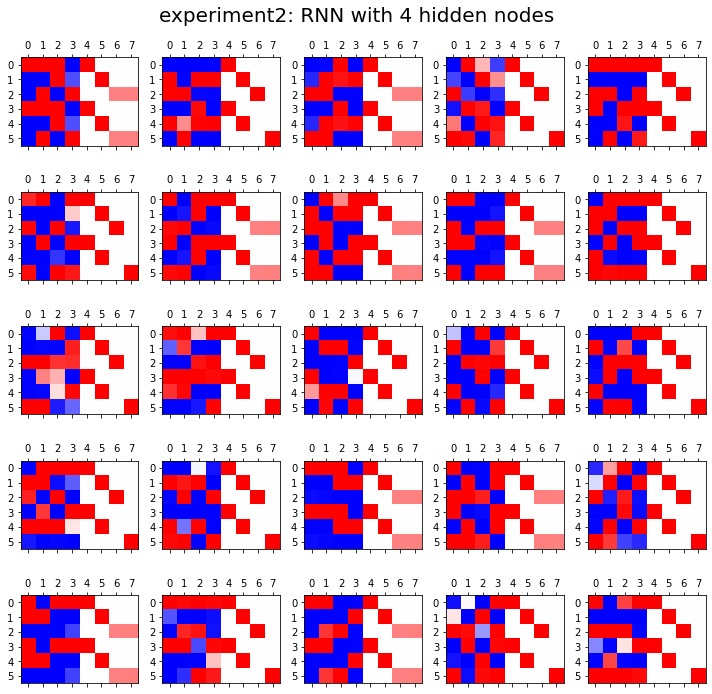

순환신경망 minor topics (1)
강의영상
https://youtube.com/playlist?list=PLQqh36zP38-zzFVZVXR27PzztD_yCYqyJ
imports
Define some funtions
순환신경망 표현력 비교실험 (1)
data: abcabC
실험
- 실험1
fig, ax = plt.subplots(5,5,figsize=(10,10))
for i in range(5):
for j in range(5):
rnn = torch.nn.RNN(4,HIDDEN).to("cuda:0")
linr = torch.nn.Linear(HIDDEN,4).to("cuda:0")
loss_fn = torch.nn.CrossEntropyLoss()
optimizr = torch.optim.Adam(list(rnn.parameters())+list(linr.parameters()),lr=0.1)
_water = torch.zeros(1,HIDDEN).to("cuda:0")
for epoc in range(500):
## 1
hidden, hT = rnn(x,_water)
output = linr(hidden)
## 2
loss = loss_fn(output,y)
## 3
loss.backward()
## 4
optimizr.step()
optimizr.zero_grad()
yhat=soft(output)
combind = torch.concat([hidden,yhat],axis=1)
ax[i][j].matshow(combind.to("cpu").data[-6:],cmap='bwr',vmin=-1,vmax=1)
fig.suptitle("experiment1: RNN with {} hidden nodes".format(HIDDEN),size=20)
fig.tight_layout()- 실험2
fig, ax = plt.subplots(5,5,figsize=(10,10))
for i in range(5):
for j in range(5):
rnn = torch.nn.RNN(4,HIDDEN).to("cuda:0")
linr = torch.nn.Linear(HIDDEN,4).to("cuda:0")
loss_fn = torch.nn.CrossEntropyLoss()
optimizr = torch.optim.Adam(list(rnn.parameters())+list(linr.parameters()),lr=0.1)
_water = torch.zeros(1,HIDDEN).to("cuda:0")
for epoc in range(500):
## 1
hidden, hT = rnn(x,_water)
output = linr(hidden)
## 2
loss = loss_fn(output,y)
## 3
loss.backward()
## 4
optimizr.step()
optimizr.zero_grad()
yhat=soft(output)
combind = torch.concat([hidden,yhat],axis=1)
ax[i][j].matshow(combind.to("cpu").data[-6:],cmap='bwr',vmin=-1,vmax=1)
fig.suptitle("experiment2: RNN with {} hidden nodes".format(HIDDEN),size=20)
fig.tight_layout()
- 실험3
fig, ax = plt.subplots(5,5,figsize=(10,8))
for i in range(5):
for j in range(5):
rnn = torch.nn.RNN(4,HIDDEN).to("cuda:0")
linr = torch.nn.Linear(HIDDEN,4).to("cuda:0")
loss_fn = torch.nn.CrossEntropyLoss()
optimizr = torch.optim.Adam(list(rnn.parameters())+list(linr.parameters()),lr=0.1)
_water = torch.zeros(1,HIDDEN).to("cuda:0")
for epoc in range(500):
## 1
hidden, hT = rnn(x,_water)
output = linr(hidden)
## 2
loss = loss_fn(output,y)
## 3
loss.backward()
## 4
optimizr.step()
optimizr.zero_grad()
yhat=soft(output)
combind = torch.concat([hidden,yhat],axis=1)
ax[i][j].matshow(combind.to("cpu").data[-6:],cmap='bwr',vmin=-1,vmax=1)
fig.suptitle("experiment3: RNN with {} hidden nodes".format(HIDDEN),size=20)
fig.tight_layout()결론
- 노드수가 많으면 학습에 유리함
순환신경망 표현력 비교실험 (2)
data: ab(c,C)
# torch.manual_seed(43052)
# txta = 'a'*50
# txtb = 'b'*50
# prob_upper = torch.bernoulli(torch.zeros(50)+0.5)
# txtc = list(map(lambda x: 'c' if x==1 else 'C', prob_upper))
# txt = ''.join([txta[i]+','+txtb[i]+','+txtc[i]+',' for i in range(50)]).split(',')[:-1]
# txt_x = txt[:-1]
# txt_y = txt[1:]
# pd.DataFrame({'txt_x':txt_x,'txt_y':txt_y}).to_csv("2022-11-25-ab(c,C).csv",index=False)df= pd.read_csv("https://raw.githubusercontent.com/guebin/DL2022/main/posts/IV.%20RNN/2022-11-25-ab(c%2CC).csv")
df| txt_x | txt_y | |
|---|---|---|
| 0 | a | b |
| 1 | b | c |
| 2 | c | a |
| 3 | a | b |
| 4 | b | c |
| ... | ... | ... |
| 144 | a | b |
| 145 | b | C |
| 146 | C | a |
| 147 | a | b |
| 148 | b | c |
149 rows × 2 columns
실험
- 실험1
fig, ax = plt.subplots(5,5,figsize=(10,10))
for i in range(5):
for j in range(5):
lstm = torch.nn.LSTM(4,HIDDEN).to("cuda:0")
linr = torch.nn.Linear(HIDDEN,4).to("cuda:0")
loss_fn = torch.nn.CrossEntropyLoss()
optimizr = torch.optim.Adam(list(lstm.parameters())+list(linr.parameters()),lr=0.1)
_water = torch.zeros(1,HIDDEN).to("cuda:0")
for epoc in range(500):
## 1
hidden, (hT,cT) = lstm(x,(_water,_water))
output = linr(hidden)
## 2
loss = loss_fn(output,y)
## 3
loss.backward()
## 4
optimizr.step()
optimizr.zero_grad()
yhat=soft(output)
combinded = torch.concat([yhat,y],axis=1)
ax[i][j].matshow(combinded.to("cpu").data[-6:],cmap='bwr',vmin=-1,vmax=1)
fig.suptitle("experiment1: LSTM with {} hidden nodes".format(HIDDEN),size=20)
fig.tight_layout()- 실험2
fig, ax = plt.subplots(5,5,figsize=(10,10))
for i in range(5):
for j in range(5):
lstm = torch.nn.LSTM(4,HIDDEN).to("cuda:0")
linr = torch.nn.Linear(HIDDEN,4).to("cuda:0")
loss_fn = torch.nn.CrossEntropyLoss()
optimizr = torch.optim.Adam(list(lstm.parameters())+list(linr.parameters()),lr=0.1)
_water = torch.zeros(1,HIDDEN).to("cuda:0")
for epoc in range(500):
## 1
hidden, (hT,cT) = lstm(x,(_water,_water))
output = linr(hidden)
## 2
loss = loss_fn(output,y)
## 3
loss.backward()
## 4
optimizr.step()
optimizr.zero_grad()
yhat=soft(output)
combinded = torch.concat([yhat,y],axis=1)
ax[i][j].matshow(combinded.to("cpu").data[-6:],cmap='bwr',vmin=-1,vmax=1)
fig.suptitle("experiment2: LSTM with {} hidden nodes".format(HIDDEN),size=20)
fig.tight_layout()결론
- 노드수가 너무 많으면 오버피팅 경향도 있음
문자열에서 단어로
data: human numbers 5
torch를 이용한 learn
torch.manual_seed(43052)
lstm = torch.nn.LSTM(6,HIDDEN).to("cuda:0")
linr = torch.nn.Linear(HIDDEN,6).to("cuda:0")
loss_fn = torch.nn.CrossEntropyLoss()
optimizr = torch.optim.Adam(list(lstm.parameters())+list(linr.parameters()),lr=0.1)
_water = torch.zeros(1,HIDDEN).to("cuda:0")
for epoc in range(50):
## 1
hidden, (hT,cT) = lstm(x,(_water,_water))
output = linr(hidden)
## 2
loss = loss_fn(output,y)
## 3
loss.backward()
## 4
optimizr.step()
optimizr.zero_grad()tensor([[9.9998e-01, 1.0322e-05, 4.6667e-07, 1.2710e-05, 6.3312e-08, 8.4611e-07],
[6.4150e-07, 9.8424e-01, 6.0318e-06, 6.6175e-03, 1.0694e-06, 9.1385e-03],
[9.9973e-01, 7.3071e-06, 6.8878e-06, 3.2753e-06, 1.6609e-05, 2.3431e-04],
[3.5137e-07, 3.4126e-06, 9.9809e-01, 1.1728e-04, 1.1325e-03, 6.5370e-04],
[1.0000e+00, 7.8201e-07, 2.4862e-07, 2.1471e-06, 1.4995e-07, 2.1554e-07],
[1.0009e-06, 2.2841e-03, 6.4430e-04, 9.9682e-01, 2.0504e-07, 2.5537e-04],
[9.9981e-01, 7.3639e-07, 1.2807e-07, 1.9391e-07, 1.8970e-04, 1.5000e-06],
[3.9604e-05, 8.6161e-06, 1.5918e-03, 1.1244e-07, 9.9808e-01, 2.7556e-04],
[9.9993e-01, 3.3252e-07, 9.5155e-06, 4.8129e-07, 2.7274e-05, 3.2102e-05],
[8.0918e-07, 8.0716e-03, 5.9763e-04, 7.7044e-05, 6.8931e-05, 9.9118e-01]])
fastai를 이용한 learn
| epoch | train_loss | valid_loss | time |
|---|---|---|---|
| 0 | 1.722138 | 1.502271 | 00:00 |
| 1 | 1.611093 | 1.973368 | 00:00 |
| 2 | 1.734299 | 1.481888 | 00:00 |
| 3 | 1.669271 | 1.377668 | 00:00 |
| 4 | 1.608570 | 1.368541 | 00:00 |
| 5 | 1.566517 | 1.267919 | 00:00 |
| 6 | 1.521232 | 1.106543 | 00:00 |
| 7 | 1.465657 | 0.959904 | 00:00 |
| 8 | 1.404815 | 0.856123 | 00:00 |
| 9 | 1.344825 | 0.802936 | 00:00 |
| 10 | 1.290437 | 0.794831 | 00:00 |
| 11 | 1.244395 | 0.771966 | 00:00 |
| 12 | 1.203488 | 0.735865 | 00:00 |
| 13 | 1.165525 | 0.690032 | 00:00 |
| 14 | 1.129149 | 0.621654 | 00:00 |
| 15 | 1.092401 | 0.555875 | 00:00 |
| 16 | 1.055485 | 0.493046 | 00:00 |
| 17 | 1.018588 | 0.423167 | 00:00 |
| 18 | 0.981230 | 0.349703 | 00:00 |
| 19 | 0.943231 | 0.279531 | 00:00 |
| 20 | 0.904838 | 0.216544 | 00:00 |
| 21 | 0.866475 | 0.166756 | 00:00 |
| 22 | 0.828821 | 0.125583 | 00:00 |
| 23 | 0.792214 | 0.094763 | 00:00 |
| 24 | 0.757037 | 0.072662 | 00:00 |
| 25 | 0.723539 | 0.055544 | 00:00 |
| 26 | 0.691763 | 0.042442 | 00:00 |
| 27 | 0.661703 | 0.032804 | 00:00 |
| 28 | 0.633335 | 0.025908 | 00:00 |
| 29 | 0.606606 | 0.020872 | 00:00 |
| 30 | 0.581437 | 0.017020 | 00:00 |
| 31 | 0.557727 | 0.014002 | 00:00 |
| 32 | 0.535379 | 0.011625 | 00:00 |
| 33 | 0.514297 | 0.009755 | 00:00 |
| 34 | 0.494391 | 0.008293 | 00:00 |
| 35 | 0.475579 | 0.007180 | 00:00 |
| 36 | 0.457784 | 0.006386 | 00:00 |
| 37 | 0.440938 | 0.005807 | 00:00 |
| 38 | 0.424976 | 0.005199 | 00:00 |
| 39 | 0.409830 | 0.004525 | 00:00 |
| 40 | 0.395437 | 0.003926 | 00:00 |
| 41 | 0.381747 | 0.003398 | 00:00 |
| 42 | 0.368712 | 0.002977 | 00:00 |
| 43 | 0.356291 | 0.002673 | 00:00 |
| 44 | 0.344447 | 0.002432 | 00:00 |
| 45 | 0.333144 | 0.002230 | 00:00 |
| 46 | 0.322349 | 0.002058 | 00:00 |
| 47 | 0.312030 | 0.001911 | 00:00 |
| 48 | 0.302160 | 0.001785 | 00:00 |
| 49 | 0.292712 | 0.001678 | 00:00 |

숙제
없음